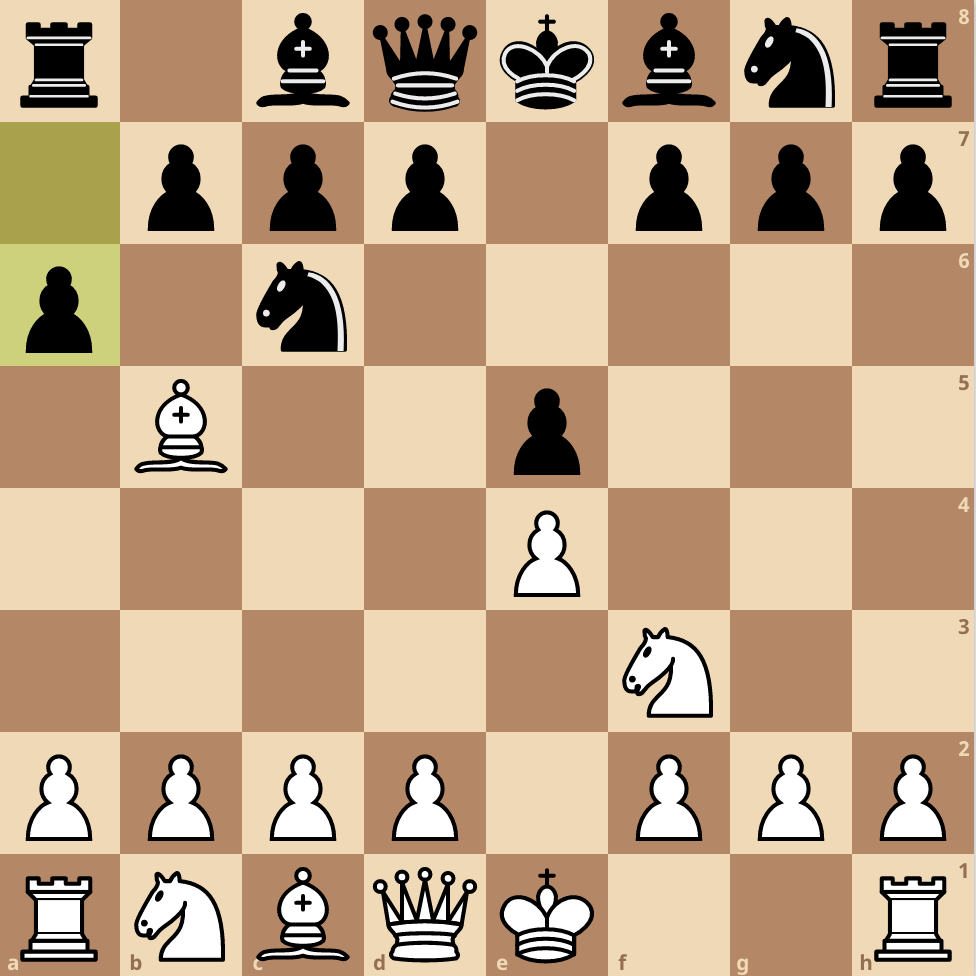
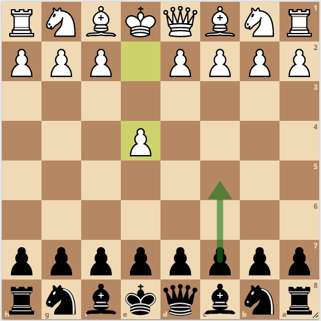
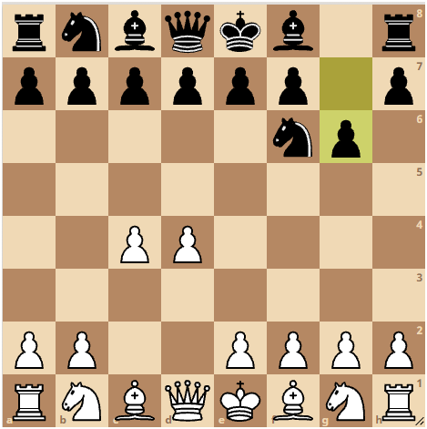

Popular Chess Openings
Here are some famous chess openings:
- Ruy-Lopez: 1. e4 e5 2. Nf3 Nc6 3. Bb5 This opening involves the bishop pinning the knight. 
- Sicilian Defense: 1. e4 c5 , this opening is my favorite because it controls the center but is unsual at lower levels which makes it ideal to learn quickly 
- Queen's Gambit: 1. d4 d5 2. c4 This opening gives up a pawn however you move your other pawn 2 squares up to take up the center of the board while also attacking the pawn
- King's Indian Defense: 1. d4 Nf6 2. c4 g6 The King's indian defense involves fianchettoing your bishop moving your knight on c3, with this opening it is agressive as it aims to attack the king side with it's pawn 